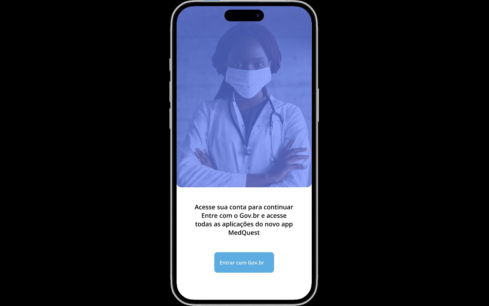

Bruno Araújo
Designer UX/UI com base em desenvolvimento front-end, focado na criação de interfaces intuitivas, funcionais e centradas na experiência do usuário.
UX Research • Wireframes • Prototipação • Figma
Designer UX/UI com base em desenvolvimento front-end, focado na criação de interfaces intuitivas, funcionais e centradas na experiência do usuário.
UX Research • Wireframes • Prototipação • Figma
Designer UX/UI em formação com base em desenvolvimento front-end. Tenho interesse em criar interfaces intuitivas, estruturar fluxos de navegação e transformar ideias em experiências digitais funcionais.
Busco unir análise, design e desenvolvimento para construir soluções bem estruturadas, funcionais e com impacto real para usuários e empresas.
Utilizo Figma para criação de wireframes, protótipos e organização de fluxos de navegação antes do desenvolvimento das interfaces.
Minha base técnica em desenvolvimento web me ajuda a criar soluções mais viáveis e alinhadas com times de tecnologia.
Atualmente busco oportunidades como UX/UI Designer Júnior.
Minhas principais habilidades combinam design centrado no usuário com desenvolvimento front-end.

Projeto focado em organização e planejamento profissional, com uma interface clara e estruturada para auxiliar usuários na definição de metas e evolução de carreira.

Projeto voltado para facilitar a leitura e interpretação de informações alimentares, com foco em usabilidade e acesso rápido a dados importantes para o usuário.

Plataforma pensada para conexão entre usuários, com foco em navegação simples, interação intuitiva e organização de informações de forma eficiente.

Aplicativo de monitoramento de saúde com foco em check-ins diários e acompanhamento do usuário, buscando oferecer uma experiência simples, intuitiva e eficiente.
Formação que desenvolveu organização, visão de processos e responsabilidade profissional.
Formação técnica com foco em programação, fundamentos de sistemas e desenvolvimento de aplicações.
Graduação com foco em lógica, desenvolvimento web e estruturação de sistemas.
Atuação em ambiente institucional com sistemas internos, participando do desenvolvimento, manutenção e apoio a soluções técnicas.
Atuação com atendimento técnico, resolução de problemas, suporte a usuários e contato direto com demandas reais.